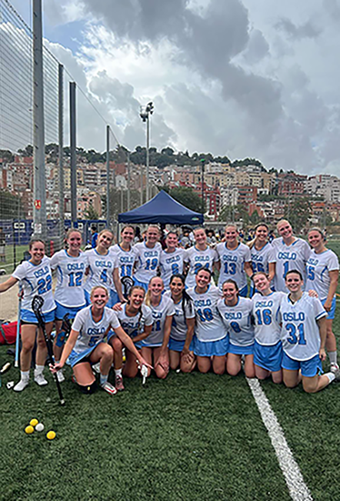

Lacrosse er en idrett med lang og stolt historie, helt tilbake til 1600-tallet. Dens opphav var som et
spill mellom ulike grupper av urfolk i Nord Amerika og idrettens seremonier er fremdeles preget av
deres rike tradisjoner.
Idretten er en lagbasert ballsport som spilles med ti spillere på hvert lag, på en bane omtrent av
samme størrelse som en vanlig fotballbane. Det finnes også innendørs lacrosse, kalt indoor eller box
lacrosse. Spillerne er utstyrt med køller med en nettlomme i enden (la crosse) som brukes til å fange
og kaste ballen mellom spillerne og i mål. Taktisk minner spillet mye om ishockey, hvor du har et
offensivt spill som handler om å sette opp spill og skaffe medspillere åpne skudd, mens keeper er
beskyttet av en vernet sone rundt målet. For herrer er spillet er svært fysisk og det brukes derfor
beskyttelsesutstyr og hjelm.
For kvinner er spillet noe annerledes. Nettlommen på crossen er ikke tillatt så dyp som for gutter –
dette gjør det enklere å slå ballen ut. Reglene for fysisk kontakt er også mye strengere og jentene
bruker dermed mindre beskyttelsesutstyr.
Lacrosse i Norge har i dag ca 1.000 aktive spillere i forbundets 16 medlemsklubber. Klubbene er i stor
grad tilknyttet universitet og høyskoler, men det er også frittstående klubber. Seriespillet foregår i
flere byer som helgeturneringer, med kvalifisering til Norgesmesterskapet som er i juni. I tillegg er det
studentmesterskap og mindre turneringer. Forbundet organiserer landslag både for herrer og kvinner,
med deltagelse i EM og VM, med gode resultater.
